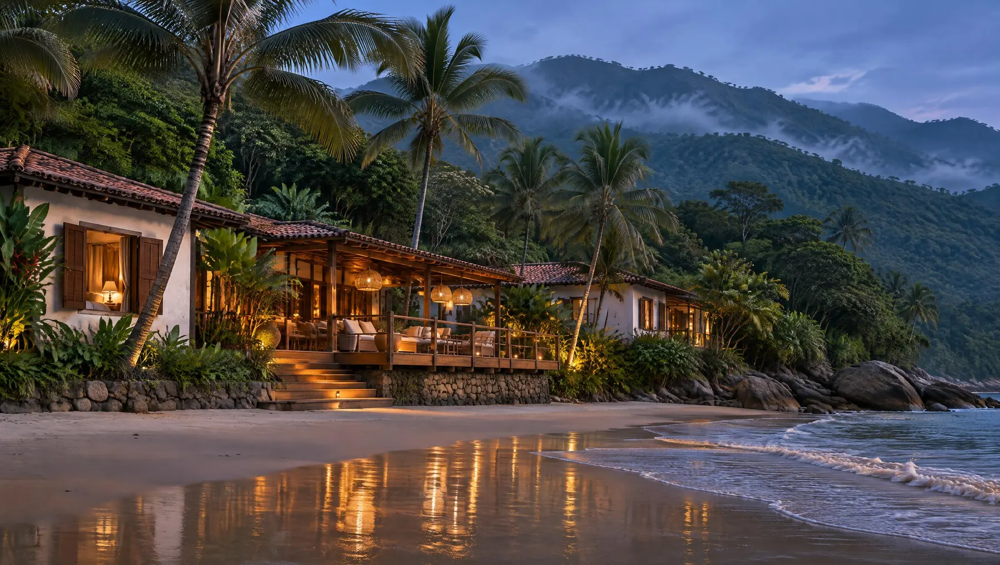
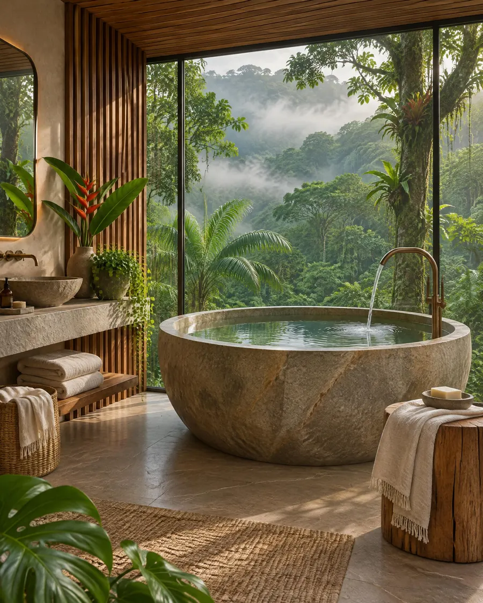
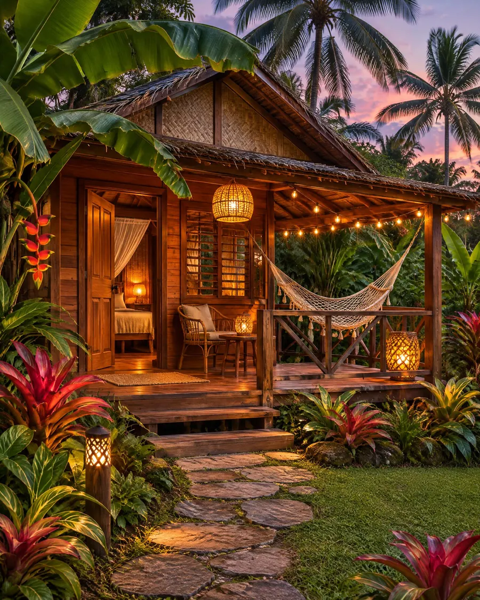
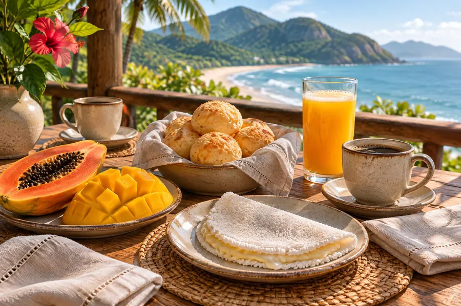

01 / 03
Suíte Mar
Varanda de frente para o mar, cama king com lençóis de linho e rede para o fim da tarde.
Pedir cotação desta suíte
Juquehy · Litoral norte de São Paulo
Oito suítes entre a mata atlântica e a areia. Café da manhã sem pressa, rede na varanda e o barulho das ondas para dormir.
Projeto conceito · pousada fictícia
A pousada
Entre a serra e o mar, a Areia Clara foi pensada para quem chega de São Paulo querendo desligar. A gente cuida do resto: as cadeiras já estão na areia, o café espera até as onze e o WhatsApp responde quando você precisar.
Números de uma pousada fictícia, criada para demonstração.
Suítes
01 / 03
Varanda de frente para o mar, cama king com lençóis de linho e rede para o fim da tarde.
Pedir cotação desta suíte
02 / 03
Banheira de pedra virada para a mata atlântica, para os dias de chuva fina e as manhãs de neblina.
Pedir cotação desta suíte
03 / 03
Uma casinha só sua no meio do jardim, com varanda, rede e espaço para a família. O pet vem junto.
Pedir cotação desta suíteNão sabe qual escolher?
A piscina fica onde o sol se põe.
Um dia aqui
Manhã · até as 11h
Frutas da estação, tapioca feita na hora e pão de queijo saindo do forno. Ninguém olha o relógio.
Tarde · areia e sombra
O guarda-sol e as cadeiras esperam na areia. Toalha, água gelada e um livro da nossa estante.
Noite · deck e lanternas
Lanternas acesas, o barulho do mar e o céu do litoral, sem pressa para acabar.

Como chegar
Juquehy fica em São Sebastião, no litoral norte de São Paulo, pela rodovia Rio-Santos. Quando você reservar, mandamos pelo WhatsApp o caminho e a localização exata.
Horários e regras de uma pousada fictícia.
Cotação
Veja como seria o pedido de cotação numa pousada real. Aqui é uma simulação: nada é enviado e ninguém responde.